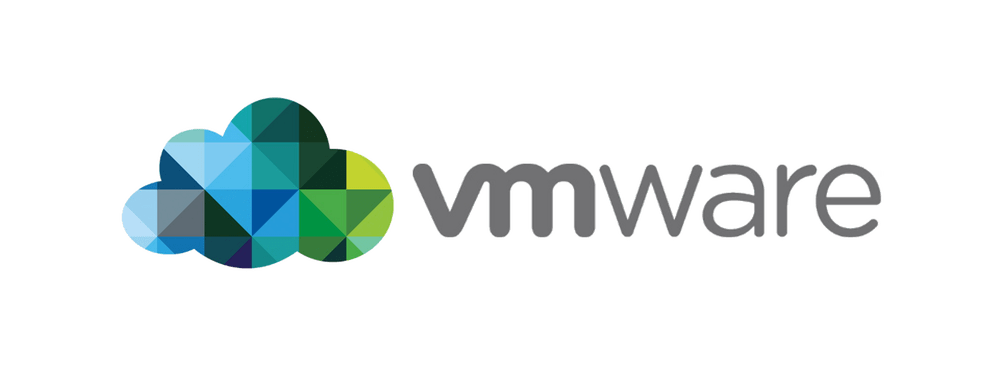
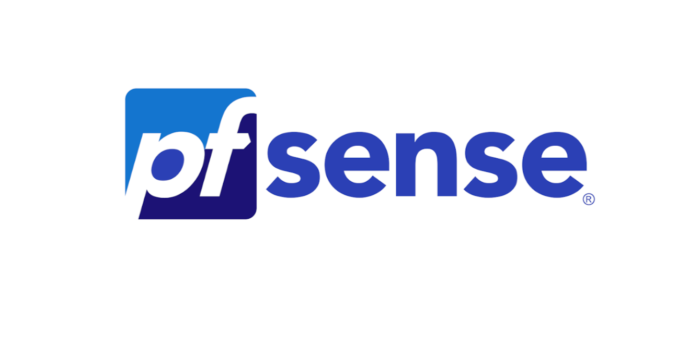
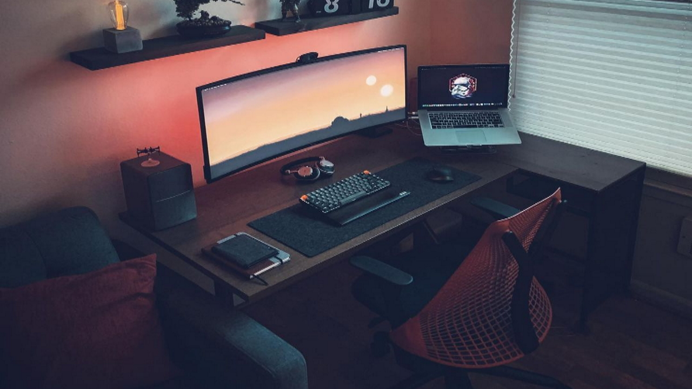
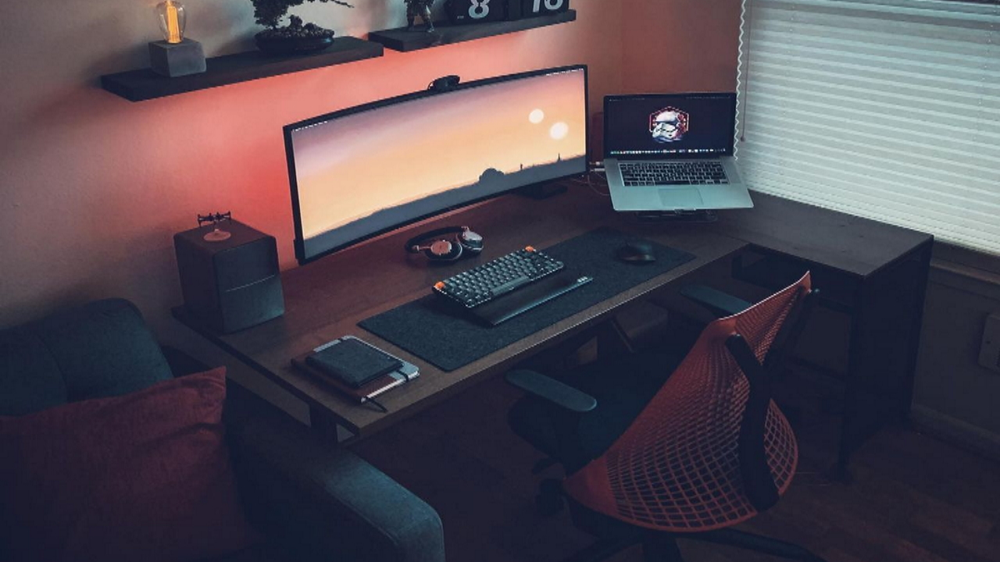

Sommaire
Curriculum Vitae
Mooc/Certifications
Projets
Veille technologique
Expériences professionnelles
Passions
Mon CV

Mooc et certifications


Mes projets
Les projets présentés ci-dessous sont des activités ayant été réalisées en période de stage en milieu professionnel lors de l'année de terminale bac pro réseaux informatiques et systèmes communicants.
Le premier projet réalisé lors de la première période de stage de l'année de terminale au service informatique de l'hopital de Lons-le-Saunier consistait à utiliser un ancien serveur de l'hopital pour faire un serveur de gestion de donnée. Il était donc nécessaire de faire en sorte que le serveur puisse stocker des données et que ces dernières soit accessibles. Il fallut également mettre en place un pare feu du nom de Pfsense. Nous avons utilisé VmWare pour réaliser plusieurs machines virtuelles de Microsoft serveur 2019.


Le second projet avait pour but de reprendre un des serveurs et le remettre en configuration d'usine pour pouvoir en faire un serveur d'authenification radius. Cela permet de créer des comptes utilisateurs avec des droits spécifiques et des codes de sessions pour chaque utilisateur. Nous avons encore une fois utilisé windows serveur 2019 pour pouvoir gérer ces sessions et ces droits.

Veille technologique
Mes expériences professionnelles
Stage de découverte de 3ème :
Stage de 4 jours qui avait pour but de découvrir un métier afin d’affiner son choix d’orientation. Stage effectué au sein de l’entreprise Restore My Device à Lons-le-Saunier, magasin spécialisé dans la réparation et la vente d’appareils Apple.
Stage de professionnalisation en bac pro réseaux informatiques et systèmes communicants :
4 périodes de stage de 4 semaines, donc 16 semaines de stage au total.
2 périodes de 4 semaines de stage en année de première au sein de l’entreprise Phone Info établie à Lons-le-Saunier. Cette entreprise est spécialisée dans la réparation et la vente d’outils informatique pour les particuliers (pc fixe, pc portable, récupération de données, imprimantes). Acquisition de compétence dans la maintenance basique d’ordinateur (changement de pièces, amélioration du stockage, installation d’os, suppression de virus).
2 périodes de 4 semaines de stage en année de terminale au sein du service informatique de l’Hôpital de Lons-le-Saunier. Ce département s’occupe de la gestion des actifs informatiques de l’Hôpital (changement d’équipement, maintenance logiciel et matériel, gestion de tous les serveurs, résolution des tickets de panne). Tâche réalisée lors de la première période : déploiement d’un serveur de gestion de donnée (fichiers médicaux de base) et d’un serveur de continuité d’activité du premier serveur. Tâche réalisée lors de la seconde période : configuration d’un serveur d’authentification Radius pour les comptes utilisateurs des postes clients de l’Hôpital. Installation de pare-feu sur tous les serveurs déployés.
Mes passions


 
